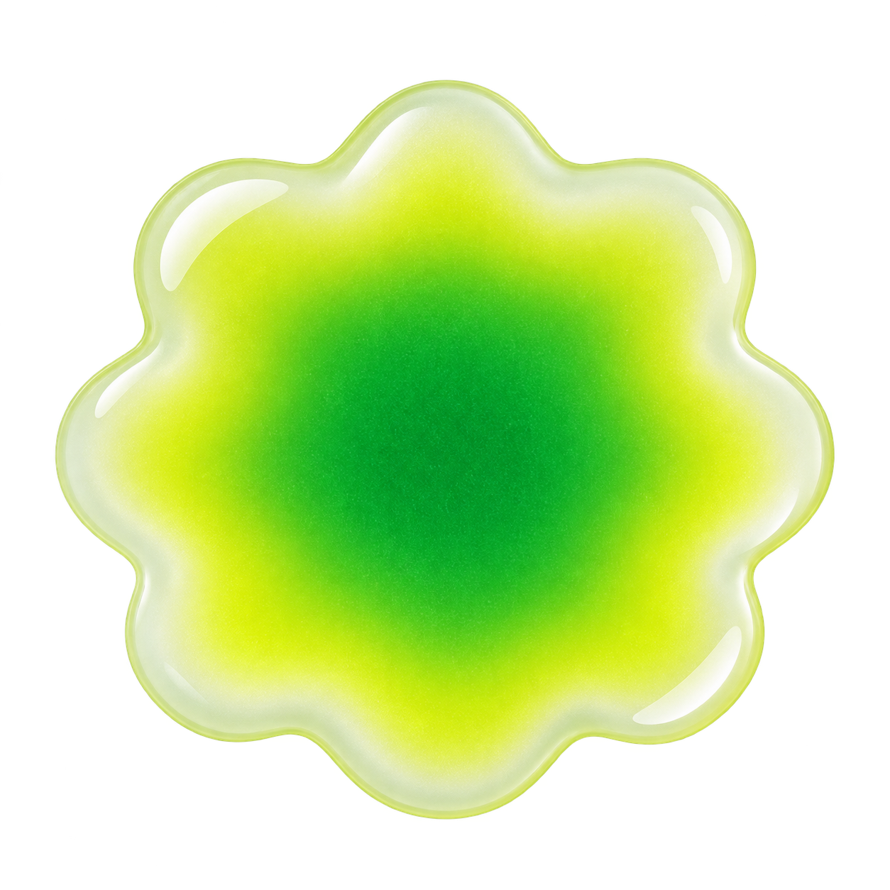
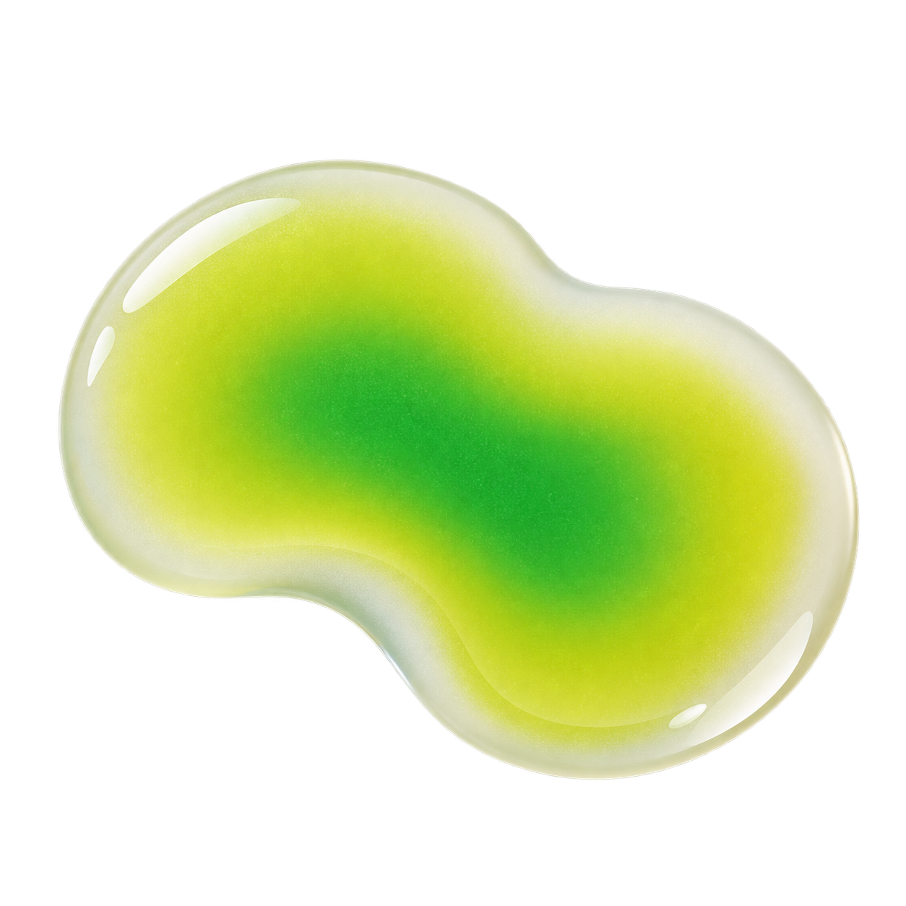
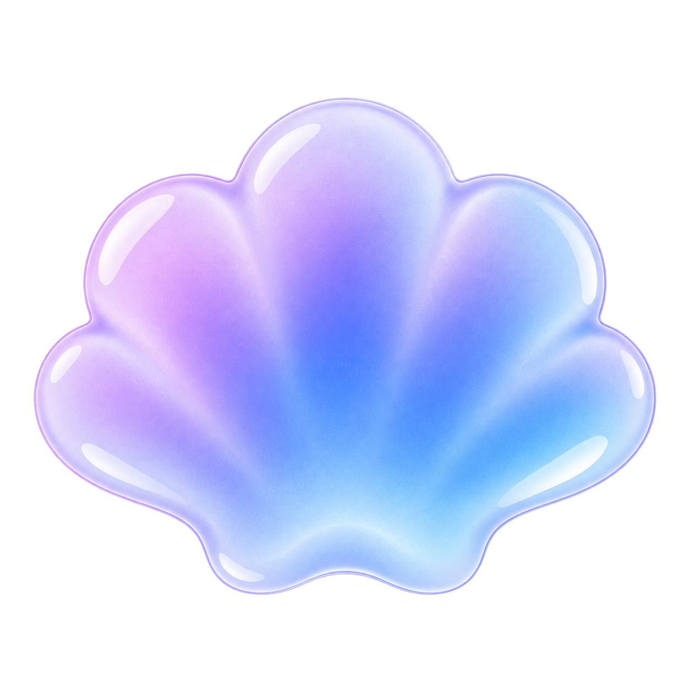

flood.md · DS 0.6.7
Contextual notices + raster brand roles
Danger notice + contextual action
Нет доступа к выбранному источникуПрава были отозваны. Подключение не будет потеряно автоматически.
Action принадлежит semantic surface: без белой/угольной вложенной плашки.
Brand accent

Один заметный акцент
Raster material поддерживает identity/brand, но не заменяет status icon или control.
Empty state
 Пока нет документовСоздайте документ — иллюстрация уступит место содержимому.
Пока нет документовСоздайте документ — иллюстрация уступит место содержимому.Stable agent identity

Flood agent
В работе
Status меняется; raster identity остаётся тем же.
Один акцент / без графики / избыток

Один акцентМатериал поддерживает композицию.
Без графики
Рабочий контент может обходиться без raster вообще.

ИзбытокПовторение конкурирует с задачей.